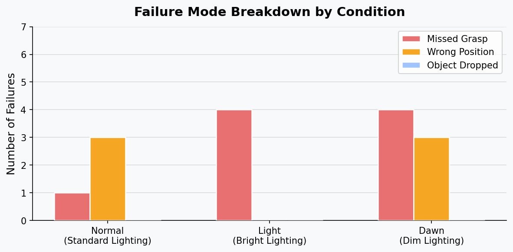

Collect demonstrations
Teleoperate the dual-arm robot and record synchronized observations, states, and actions.
A bi-manual SO-101 robot that locates a lipstick on a cluttered surface, grasps it, and delivers it to a target location. The system combines ACT imitation learning with YOLO-based visual attention to improve generalization across object positions.
The project uses behavioral cloning to translate camera observations and robot states into joint actions. A fine-tuned YOLO detector highlights the lipstick in training frames, directing visual attention toward the task-relevant object.
Teleoperate the dual-arm robot and record synchronized observations, states, and actions.
Fine-tune YOLOv8n and generate highlighted observations around the target object.
Learn temporally coherent action chunks through imitation learning in LeRobot.
Run repeated grasping trials under normal, bright, and dim lighting.
The policy was evaluated over ten trials per lighting condition. Normal and bright lighting both reached 60% success, while dim lighting fell to 30%, revealing a clear sensitivity to visual contrast.


The policy achieved 6/10 successful grasps in each condition.
Success fell to 3/10 as object contrast and visual features weakened.
The arm often reached the correct region but closed with a small angular or positional offset.
All three team members contributed to data collection, robot operation, debugging, evaluation trials, and the final presentation.
Shirley He, Yuhang Sun, and Elina Zhao jointly built the demonstration dataset, calibrated and operated the robot, analyzed failure cases, and prepared the final deliverables.
The public repository contains the evaluation scripts, training pipeline, robot and camera configurations, quantitative results, and setup documentation.
Course project for TECHIN 517, University of Washington Global Innovation Exchange.